About Me
I’m a full-stack developer at the Federal Reserve Bank of St. Louis, focused on building efficient and user-friendly web applications. I’m always interested in exploring new technologies and enjoy working on personal projects in my free time. Coding is both my job and my favorite way to stay creative.
Experience
Software Developer
Federal Reserve Bank of St. Louis, Aug 2024 - Present
Development of full-stack web applications in collaboration with a Scrum team, enhancing skills in agile methodologies and cross-functional teamwork. Proficiency in efficiency and high-quality code.
Technology Intern
Federal Reserve Bank of St. Louis, May 2024 - Aug 2024
Continued developing full-stack web applications. Gained valuable experience with GitLab, including managing CI/CD pipelines, and worked with AWS cloud services to deploy and manage scalable applications.
Technology Intern
Federal Reserve Bank of St. Louis, May 2023 - May 2024
Built full-stack web applications as part of a Scrum team, gaining hands-on experience in agile development and collaborative project work. Extended internship to take on test automation responsibilities, developing proficiency in Cucumber and Selenium to enhance software quality and testing efficiency.
Skills
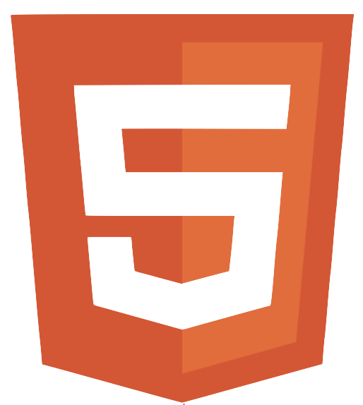
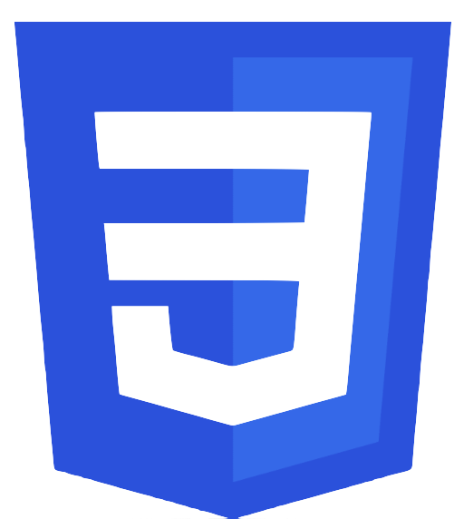
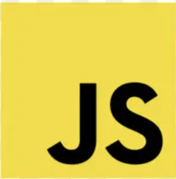
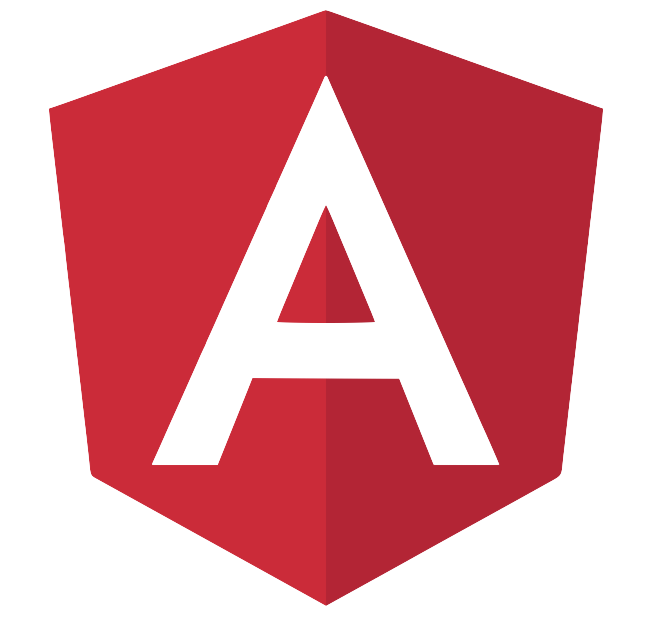
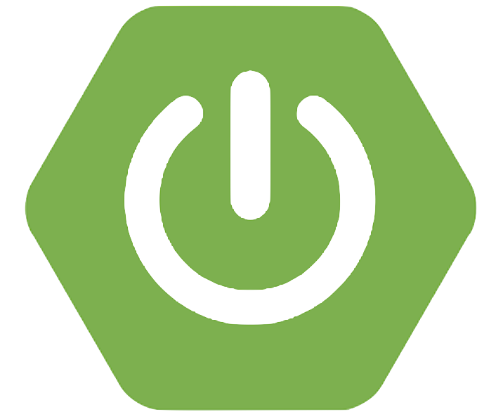
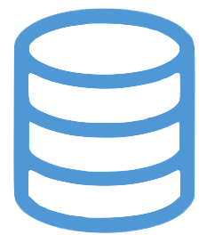
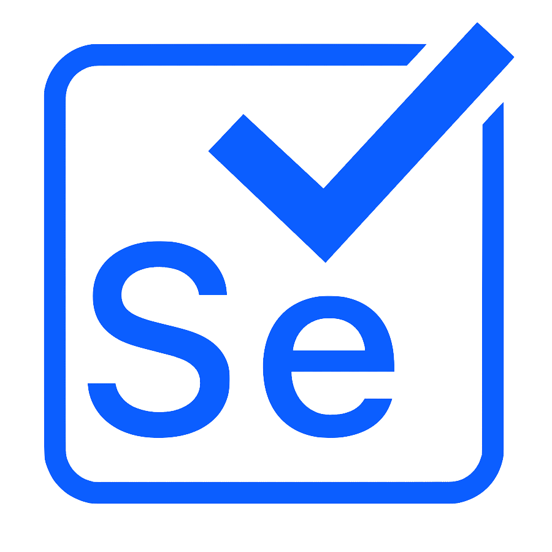
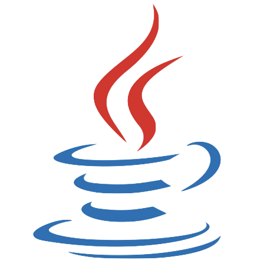
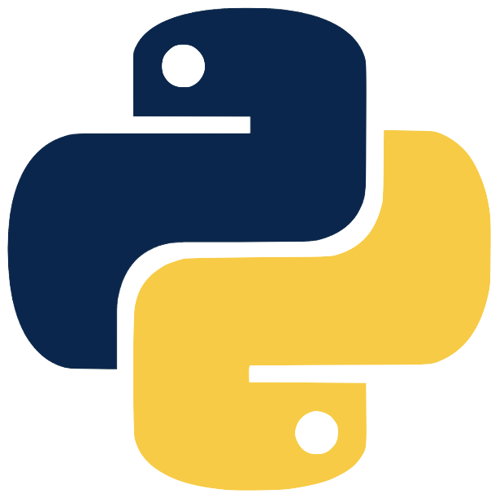
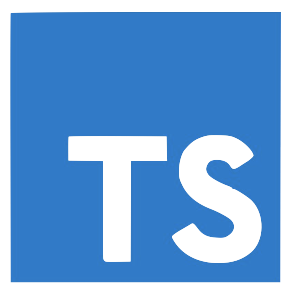
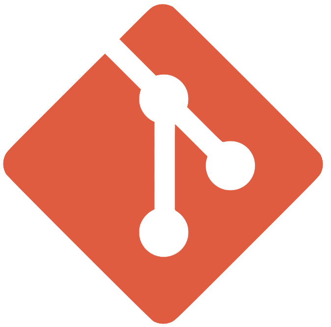
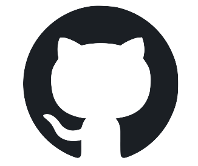
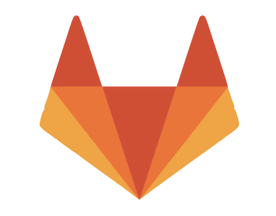
Projects
VinylVault
A CRUD application designed for users to catalog and manage their collections. Developed with Angular for the frontend and Spring Boot (Maven) for the backend, this app provides a user-friendly interface for adding, viewing, updating, and deleting records in a personal vinyl database.
Check out the code open_in_newMTG Card Generator
A Flask-based web application enhanced with the OpenAI API, enabling users to create custom Magic: The Gathering cards. This app allows users to input their card ideas, and it employs advanced AI to generate imaginative card text and attributes, producing a unique and visually appealing custom card.
Check out the code open_in_newDivArt
A CSS art project inspired by Lynn Fischer's "A Single Div", showcasing artworks created using only a single HTML div element. This project leverages the Pug templating engine and the Stylus CSS preprocessor, demonstrating advanced CSS techniques and the artistic potential of web development.
Check out the code open_in_newWebsites
Website for Mizzou Electric Racing.
My portfolio website.